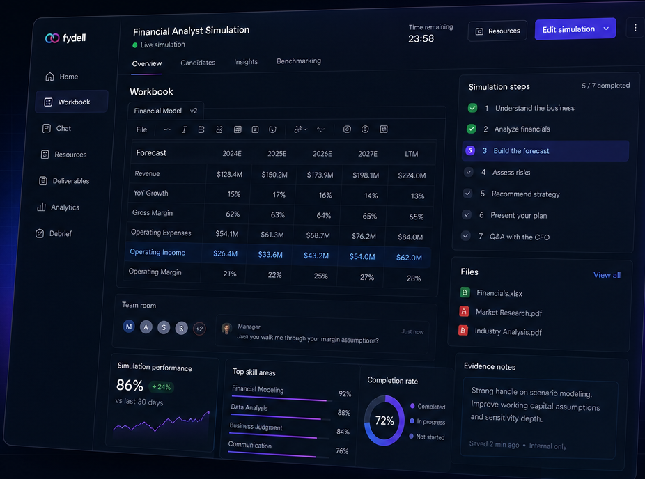
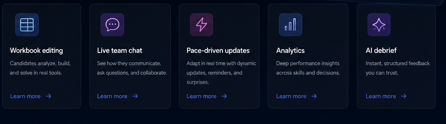

Run the role before the offer
fydell turns the interview into a working session. Candidates build in real tools while you watch the signal, not the polish.

Design the simulation
Pick a role scenario or shape your own with custom tasks and rubrics.
Invite candidates
They work through the scenario in real tools, at a time that suits them.
Score on evidence
Structured analytics rank candidates on skill, judgment, and outcomes.
Decide with confidence
Share a clear, defensible debrief and move the right people forward.
Everything in one working environment
Candidates do the job in front of you. Every action becomes structured, comparable evidence.
Workbook editing
Candidates analyze, build, and solve in real tools, so you see how they actually work.

Live team chat
See how candidates communicate, ask questions, and collaborate under pressure.
See it in the simulationAnalytics
Deep performance insight across every skill and decision a candidate makes.
View a sample reportAI debrief
Instant, structured feedback you can trust and share with the hiring panel.
View a sample reportHow a simulation runs
Send a link
Invite top talent with a role-specific simulation built around the job.
Watch them work
Candidates tackle real scenarios in real tools, just like on the job.
Get the signal
AI and expert rubrics reveal true potential and fit, scored consistently.
See the signal for yourself
Run the Project Meridian analyst simulation end to end in your browser.